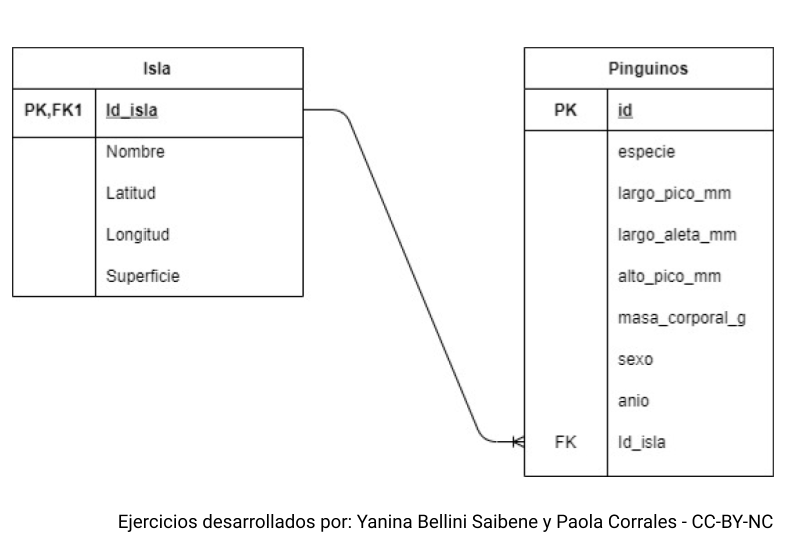
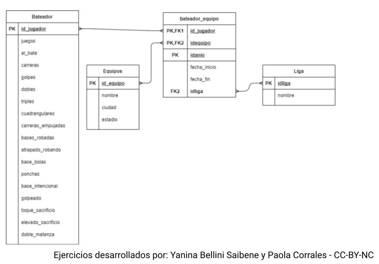
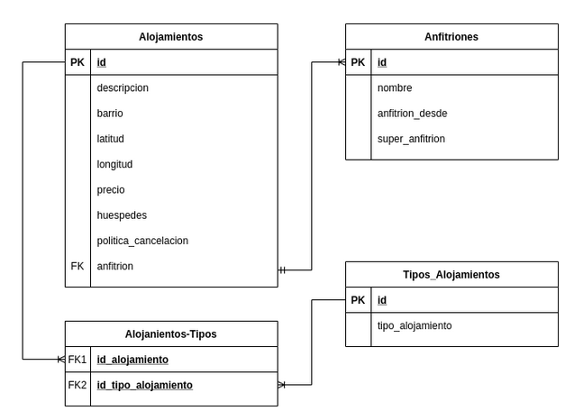

Clase 6 - El lenguaje estándar SQL
Objetivos de Aprendizaje
Conocer y utilizar sentencias de manejo de datos en SQL
Agregar datos a una tabla con INSERT.
Seleccionar datos con SELECT.
Filtrar filas con SELECT y WHERE.
Actualizar datos en una tabla con UPDATE, incorporar condiciones con WHERE.
Borrar registros de una tabla con DELETE utilizando condiciones con WHERE.
Utilizar SELECT para construir la condicion del WHERE para actualizar o borrar registros.
Seleccionar diferentes columnas con SELECT. Entender y utilizar el *.
Ordenar la salida de una consulta con ORDER BY.
Remover duplicados de una consulta con DISTINCT.
Filtrado avanzado de registros. Diferencias enr AND, OR, NOT, IN, BETWEEN, LIKE.
Slides
Ejercicios
Ejercicio 1 - Trabajo en grupo
Tiempo: 20 minutos. Herramienta: https://sqliteonline.com/
Vamos a utilizar la base de datos creada en el ejercicio 1 realizado durante la Clase 5.
Tabla CLIENTES
Agreguen estos datos a la tabla CLIENTES
Chequeen con SELECT que los datos fueron agregados correctamente.
| CUIT | NOMBRE | DIRECCION | TIPO_CONTRIBUYENTE |
| 22113456784 | LA PAPELERA | HAITI 780 | 1 |
| 23456987364 | LA ESQUINA DEL ARTISTA | GUATEMALA 678 | 2 |
| 21923456782 | TODO PARA LA OFICINA | COSTA RICA 25 | 1 |
| 3456183067 | EL GRAFITO | PANAMA S/N | 1 |
Tabla EMPRESAS
Agreguen estos datos a la tabla EMPRESAS
Chequeen con SELECT que los datos fueron agregados correctamente.
| CUIT | NOMBRE | DIRECCION | TIPO_CONTRIBUYENTE |
| 22345612984 | RIVADAVIA | 1 | |
| 24561230364 | EXITO | 2 | |
| 21923888782 | MAPED | 1 | |
| 43456183145 | DOS BANDERAS | 1 |
Tabla PRODUCTO
Agreguen estos datos a la tabla PRODUCTO
Chequeen con SELECT que los datos fueron agregados correctamente.
| IDPRODUCTO | NOMBRE | STOCK | PRECIO |
| 1 | HOJAS CARPETA N° 3 | 1000 | 450,80 |
| 2 | CUADERNO ABC | 2000 | 250,00 |
| 3 | LAPICES 12 COLORES LARGOS | 500 | 650,90 |
| 4 | GOMA DE BORRAR LAPIZ | 300 | 35,50 |
- Exporten el SQL Schema y suban el archivo al campus.
Entidad FACTURAS
Generar los registros en las tablas de encabezado y detalle de factura para vender los siguientes productos:
La Papelera compró 100 cajas de hojas de carpeta N° 3 Rivadavia y 50 gomas de borrar MAPED.
El Grafito compró 200 cuadernos ABC y 75 cajas de lápices de 12 colores largos.
Chequeen con SELECT que los datos fueron agregados correctamente.
Descarguen los datos como CSV y suban el archivo al campus.
Actualización de datos
Actualicen el campo STOCK de la tabla de productos para que refleje los cambios en el stock luego de las ventas a La Papelera y a El Grafito.
Cuando terminen descarguen los datos en formato CSV y subanlo al campus.
Esta es una plantilla del documento compartido utilizando google slides. Es el mismo archivo para toda la clase.
Ejercicio 2 - Trabajo en grupo
Descarguen la base de datos del campus.
Entren a la interfaz de SQLite On-line y carguen la base de datos survey.db.
Escriban los SQL para resolver los ejercicios.
Suban los SQL al campus indicando el número de grupo que los resolvió.
Seleccionar
Escriba una consulta que seleccione todas las columnas de la tabla site
Escriba una consulta que seleccione solo la columna personal de la tabla person.
Escriba una consulta que seleccione todas las columnas de la tabla survey con la columna reading en primer lugar y la columna person en último lugar.
Ordenando y sacando duplicados
Escriba una consulta que remueva los duplicados de la columna taken de la tabla survey
Escriba una consulta que devuelva todos los campos de la tabla Visited ordenados por fecha de forma descendente.
Escriba una consulta que devuelva toda las columnas de la tabla site ordenados por latitud y longitud
Filtrar
Escriba una consulta que muestre todos los casos donde reading sea mayor a 5
Modifica la consulta para que además quant sea rad.
Escriba una consulta que devuelva todas las filas de Visited donde la fecha corresponda al año 1927
Modificar columnas y uniones
Las mediciones de salinidad tomadas por Willian Dyer tienen un error sistemático, su instrumento siempre mide 0.01 de menos. Escriba una consulta para corregir estos valores.
Escriba una consulta para expresar las mediciones de temperatura en grados Kelvin (sumar 273.15 a grados Celsius)
Se quiere expresar las mediciones rad, sal y temp como radiacion, salinidad y temperatura respectivamente. Escriba una consulta para modificar la columna quant y unir las tablas resultantes en una sola.
Esta es una plantilla del documento compartido utilizando google slides. Es el mismo archivo para toda la clase.
Ejercicios de Tarea
Para cada diagrama:
Cargar el esquema de las bases de datos generados para los ejercicios de tarea de la clase 5
Cargar 10 registros para cada tabla utilizando los datos provistos.
Escribir el comando que borre los registros que cumplan determinada condición, pero no borrarlos!
Ejercicio 1: Pingüinos con un largo de pico menor a 34 mm
Ejercicio 2: Bateadores que tienen más de 175 carreras
Ejercicio 3: Alojamientos para más de 8 huéspedes.
Exportar el SQL y subirlo al foro de la Clase 6
Ejercicio 1 - Pingüinos
Medidas de tamaño de pingüinos adultos en busca de comida cerca de la estación Palmer en la Antártica.

Ejercicio 2 - Bateadores
Estadísticas de bateadores de beisbol

Ejercicio 3 - AirBnB
Datos de AirBnB en Buenos Aires
